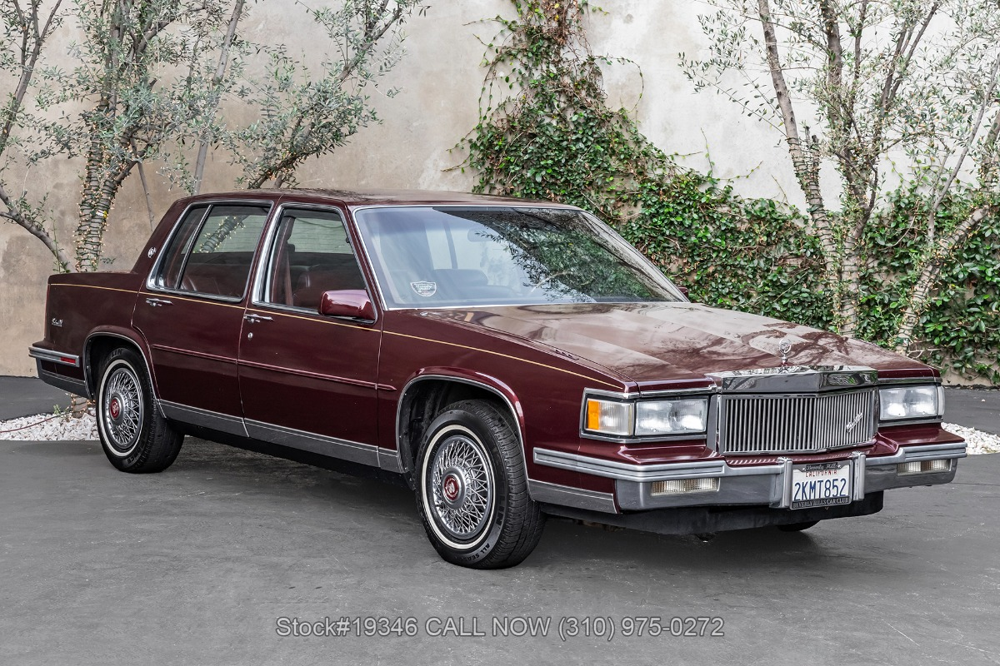

El Sevan de Ville es un vehiculo de los años 80, el cual fue usado como modelo de referencia para el automovil de tio Stan en la serie "Gravity Falls" de Disney.

Desarrollado por: Nathaly Rojas
Conoce mi Github